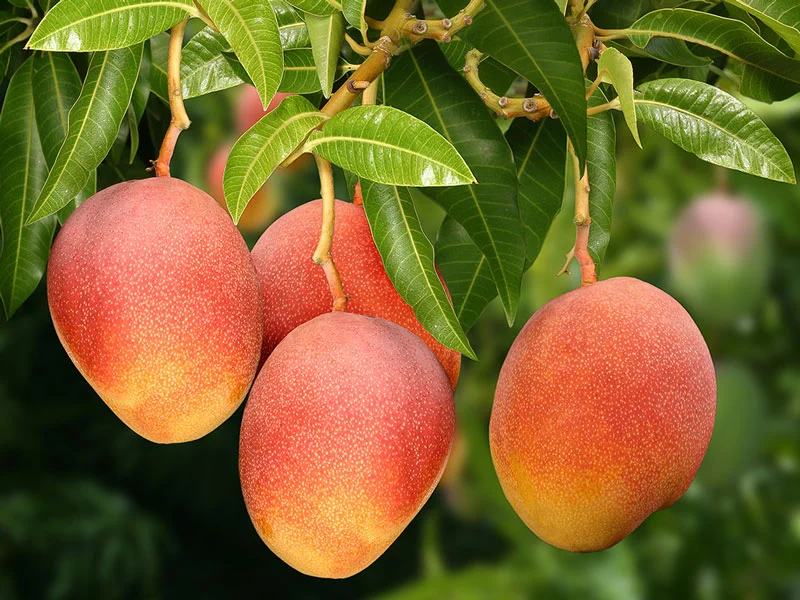
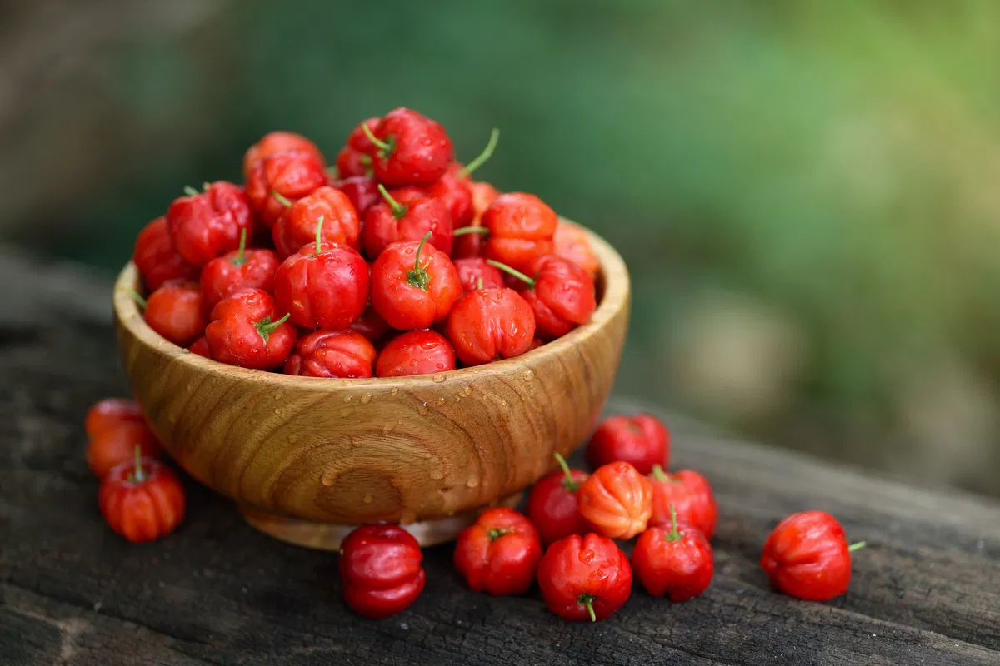
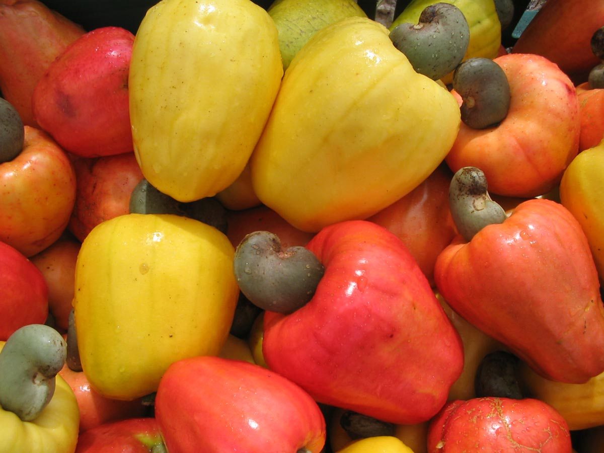

A manga é uma das frutas mais cultivadas na região, com alta produção durante o verão e grande valor comercial.
Saiba Mais
Rica em vitamina C, a acerola é bastante cultivada e utilizada para sucos e polpas na região.
Saiba Mais
O caju é muito importante economicamente, sendo utilizado tanto o fruto quanto a castanha.
Saiba Mais